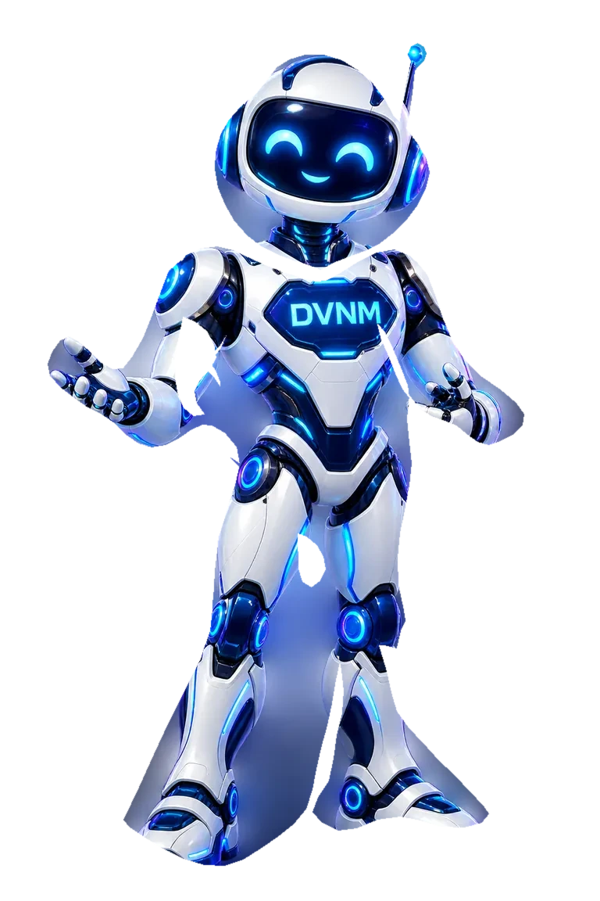
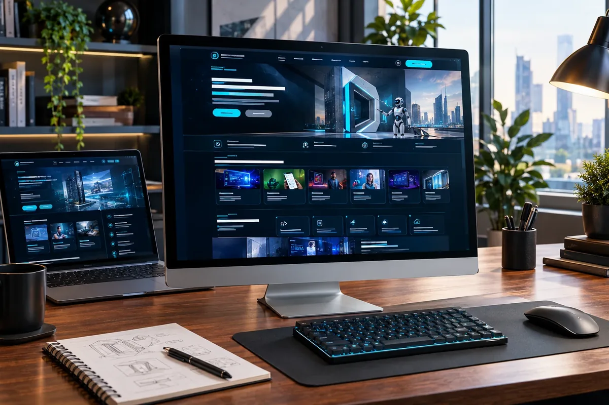

Marvel Chat
A communication product focused on useful conversations, community interactions, and dependable everyday access.
Read product guide →This technology-company environment presents Davonium Technologies’ own identity: real-world product thinking, web engineering, approachable support, and clear status labels—without pretending every experience is already launched.


DAVONIUM TECHNOLOGIESClarity at the front. Thoughtful engineering underneath.

These cards use Davonium’s actual product names and honest development language. They do not point visitors to restricted or unpublished app destinations.
A communication product focused on useful conversations, community interactions, and dependable everyday access.
Read product guide →A developing workspace experience for project coordination, delivery handoffs, and organised client work.
Read product guide →A learning initiative being developed for structured study and exam-practice journeys. No public app launch is linked here.
Read development guide →A branded guide helps visitors reach products, services, documentation, and contact details. Voice is opt-in and device-dependent; written answers stay available.
Explore DVNM Bot ↗01Mobile-first web experiences
02Search-friendly structure and useful content
03Documentation, testing, and handoff
04Honest feature status and clear boundaries
We clarify the audience, content, brand assets, accessibility needs, integrations, budget, ownership, hosting, and first-release goal before a real build begins.
We include a unique QR code so a visitor can open this specific demo on a phone or tablet. Scan the code with a camera, or use the direct link. This QR code opens DVNM Digital. Product statuses remain as stated by Davonium Technologies.
Demo URL: https://www.davoniumtech.com/demos/technology
Download this demo QR code ↓ Download DVNM Digital certificate ↓↓ Download A4 print flyerDownload flyer image →